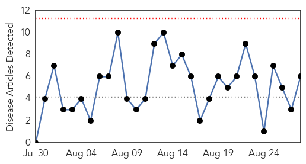
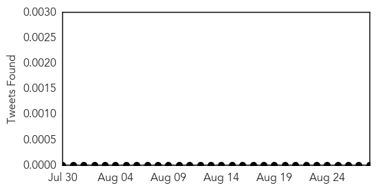
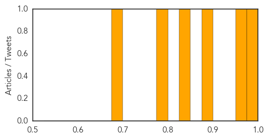
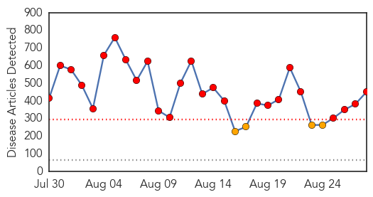
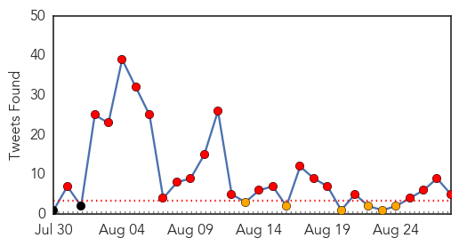
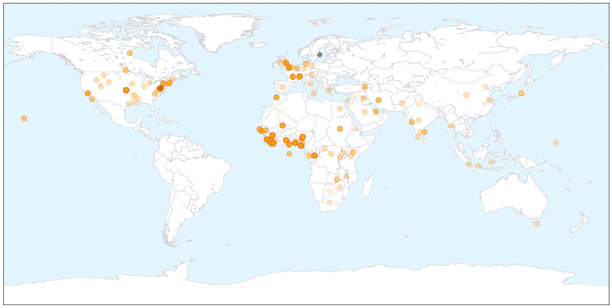
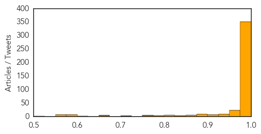

West Nile Virus
30-Day Web Trend
0 alerts, 0 warnings

30-Day Twitter Trend
0 alerts, 0 warnings

Article Locations


Article Confidences
Top Articles:
- 0.997
- More cases of West Nile being reported in Iowa
- 0.974
- 7 counties named where new West Nile virus cases confirmed
- 0.877
- O.C. reports 2nd West Nile death this year, 8th so far in the state
- 0.846
- CDC Advises to take more Safety Measures to Avoid Mosquito Bites
- 0.782
- Pool of mosquitos first to test positive for West Nile virus this year
- 0.685
- Mount Pleasant woman says she has West Nile - WCIV-TV
Top Tweets:
-
No tweets found for Aug 28, 2014
Ebola
30-Day Web Trend
26 alerts, 4 warnings

30-Day Twitter Trend
22 alerts, 6 warnings

Article Locations

X

Article Confidences
Top Articles:
- 1.000
- Experts warn Ebola outbreak ‘out of control’
- 1.000
- Untitled Article
- 1.000
- Ebola virus could infect 20,000 before outbreak is over, World Health Organization says
- 1.000
- Sense of urgency heightens over Ebola crisis
- 1.000
- Ebola Containment 'Chaotic and Entirely Inadequate,' Says Doctors Without Borders
- 1.000
- WHO fears Ebola outbreak could infect 20,000 people
- 1.000
- West Africa Ebola outbreak could infect 20,000 people, WHO says
- 1.000
- WHO: Ebola Cases Could Eventually Reach 20,000
- 1.000
- Danger of Ebola as haj pilgrims kept in dark
- 1.000
- Ebola Cases Might Exceed 20K as Human Vaccine Tests Begin
- 1.000
- Ebola outbreak: Airlines stop flights as US expert warns outbreak will 'worsen'
- 1.000
- Ebola cases may exceed 20,000
- 1.000
- Unprecedented number of medical staff infected with Ebola
- 1.000
- Protecting medical workers against Ebola in Liberia — SOS Children
- 1.000
- Ebola Death Toll In West Africa Tops 1550
- 1.000
- Experient Health Discusses Low Ebola Risk in United States in Latest Blog Post
- 1.000
- Ebola Outbreak Could Infect 20,000 People, U.N. Says
- 1.000
- Ebola Has 'Upper Hand' Says US Health Official
- 1.000
- NationalJournal
- 1.000
- Airlines Isolate Ebola Zone Nations
- 1.000
- Ebola Outbreak in Sierra Leone Began at a Funeral
- 1.000
- Ebola zone countries isolated as airlines stop flights
- 1.000
- West Africa Ebola outbreak could infect 20,000 people: WHO
- 1.000
- Origin Of Ebola Outbreak May Be A Bat And Virus Has Rapid Mutation Rate
- 1.000
- Ebola outbreak could infect 20,000
- 1.000
- CDC Warns Epidemic May Worsen; Current Outbreak Deadliest Since 1976
- 1.000
- UN: Ebola cases could eventually reach 20,000
- 1.000
- Ebola: five countries, one fear
- 1.000
- Experient Health Discusses Low Ebola Risk in United States in Latest Blog Post
- 1.000
- Rapidly mutating Ebola could infect up to 20,000, health officials say
- 1.000
- UN: Ebola disease caseload could reach 20,000
- 1.000
- UN: Ebola disease caseload could reach 20,000
- 1.000
- Ebola outbreak: Six reasons why it's out of control
- 1.000
- CDC Worker Flown Home After Low Risk Exposure
- 1.000
- Ebola spreads to Nigeria oil hub Port Harcourt
- 1.000
- WHO issues road map to combat Ebola outbreak
- 1.000
- Ebola outbreak: US health chief predicts death toll will 'get worse'; Nigeria keeps schools closed
- 1.000
- Ebola outbreak reaches Senegal, riots break out in Guinea
- 1.000
- West Africa Ebola outbreak could infect 20,000 people, WHO says
- 1.000
- Nigeria’s Health Minister Onyebuchi Chukwu Confirms Ebola Death In Port Harcourt
- 1.000
- West Africa Ebola outbreak could infect 20,000 people, WHO says
- 1.000
- #WHO says #Ebola cases could exceed 20,000
- 1.000
- Ebola disease caseload could reach 20,000 (Update)
- 1.000
- Ebola zone countries isolated as airlines stop flights
- 1.000
- West Africa Ebola outbreak could infect 20,000 people, WHO says
- 1.000
- Deadliest Ebola Outbreak in History Death Toll Climbs Over 1,500; Continues Accelerating
- 1.000
- Ebola outbreak: West Africa travel bans to be lifted
- 1.000
- Ebola outbreak: WHO warns that virus could infect 20,000
- 1.000
- Ebola outbreak: US official says epidemic will worsen
- 1.000
- Ebola Outbreak in Sierra Leone Is Tied to One Funeral
Showing top 50 articles...
Top Tweets:
- 0.984
- RT: .@JeremyKonyndyk & @USAID Ebola DART met w/ Liberia'n President Sirleaf on stopping spread of Ebola http://t.c…
- 0.753
- More than half of Ebola beds needed for 3-country outbreak acc to are in a single city Monrovia: 840 out of 1515.
- 0.714
- RT: WHO issues today a roadmap to guide and coordinate the international response to the Ebola outbreak in West Africa http://t.co/iu…
- 0.671
- RT: At this time the Ebola outbreak in DRC is believed to be unrelated to the ongoing outbreak in West Africa http://t.co/k1bI4OLnqB
- 0.504
- Ebola in West Africa prevents access to regular health services. Increases malaria risks http://t.co/6lCki4VzSW